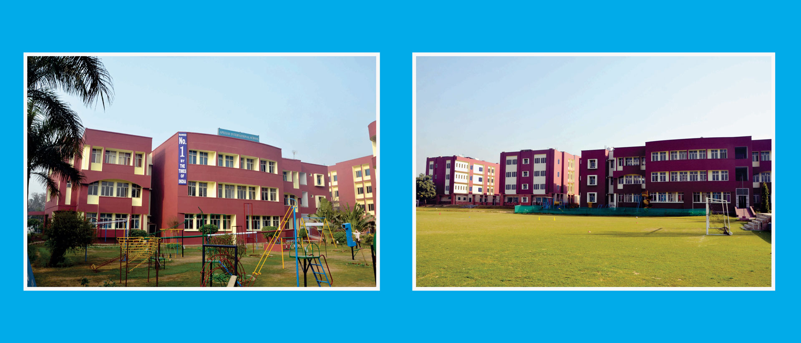

Counted among the best schools in Greater Noida, Appejay International School is a part of the Apeejay Education Society which
was found in 1967 by Dr Stya Paul to provide quality education right from the pre-nursery to the doctorate level. Spread over a
lush-green 15-acre complex, the school is conveniently located in Greater Noida, which is the youngest, best planned, pollution-
free cities of Uttar Pradesh. It is CBSE-affiliated, co-ed school that has been consistently ranked among to international schools
in Greater Noida by several renowned publications.
Apeejay International School firmly holds the view that education should ensure for the youth of the country a harmonious development of
their personalities. They should be provided intensive holistic education that leads to responsive & responsible citizenship and a finely
ingrained attitude of service before self. With an emphasis on building a strong value base, the more significant character traits that we
aim to instill in students comprise honesty, courage, initiative, tolerance, group-work, social responsibility, scientific temper and
patriotism.
The school Moto - 'Soaring High is my Nature', exemplifies the fact that the sky is the limit in the pursuit of excellence. As one of the
top schools on Greater Noida, the School aims to promote a system of integral education in a congenial child-friendly environment that
emphasises the unity of all knowledge, synthesises humanity and sciences, and recognises the fact that each child is unique.
The School is well-connected t Noida via an eight-lane expressway and to Delhi via DND Flyway with transport facilities provided for all
sectors of Noida and Greater Noida. One of the greenest schools of the city, the Apeejay International School offers an ideal, pollution-
free and tranquil environment for the holistic development of children. For it's emphasis on environment education, the School has also
been appreciated by SAARC.

Address: 1, Surajpur Kasna Rd, Institutional Area, Knowledge Park III, Greater Noida, Uttar Pradesh 201308